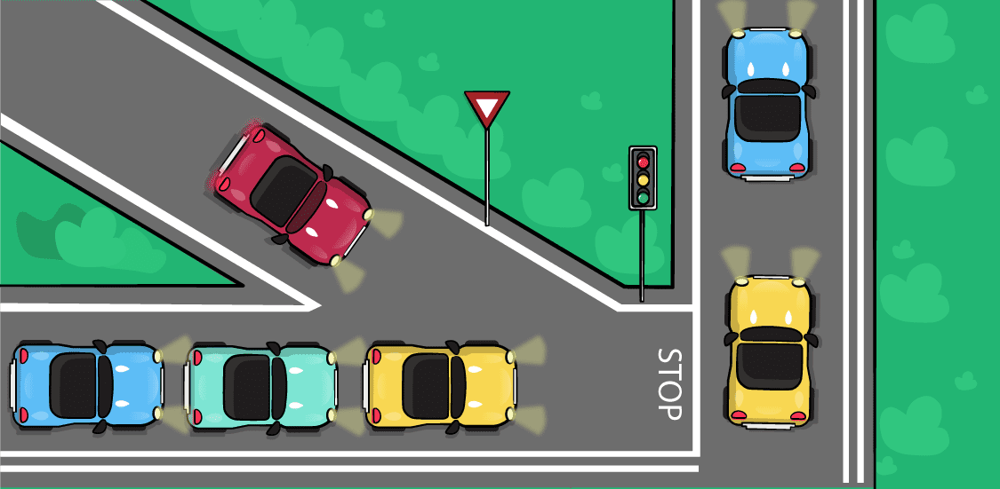
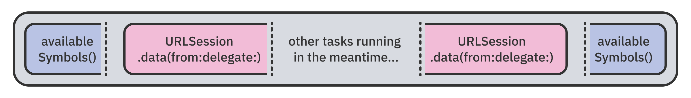
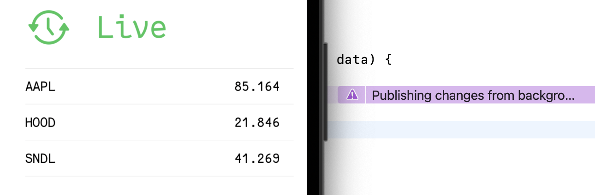

Chapter 1: Why Modern Swift Concurrency?¶
The last time Apple made a big deal about an asynchronous framework was when Grand Central Dispatch (GCD) came out, along with Mac OS X Snow Leopard, in 2009.
While GCD helped Swift launch in 2014 with support for concurrency and asynchrony from day one, that support wasn’t native — it was designed around the needs and abilities of Objective-C. Swift just “borrowed” that concurrency until it had its own mechanism, designed specifically for the language.
All that changed with Swift 5.5, which introduced a new, native model for writing asynchronous, concurrent code.
The new concurrency model provides everything you need to write safe and performant programs in Swift, including:
- A new, native syntax for running asynchronous operations in a structured way.
- A bundle of standard APIs to design asynchronous and concurrent code.
- Low-level changes in the
libdispatchframework, which make all the high-level changes integrate directly into the operating system. - A new level of compiler support for creating safe, concurrent code.
Swift 5.5 introduces the new language syntax and APIs to support these features. In your apps, besides using a recent Swift version, you also need to target certain platform versions:
- If you’re using Xcode 13.2 or newer, it will bundle the new concurrency runtime with your app so you can target iOS 13 and macOS 10.15 (for native apps).
- In case you’re on Xcode 13 but earlier version than 13.2, you’ll be able to target only iOS 15 or macOS 12 (or newer).
In the first chapter of the book, you’ll review the new concurrency support in Swift and see how it fares compared to the existing APIs. Later, in the practical part of the chapter, you’ll work on a real-life project by trying out the async/await syntax and adding some cool asynchronous error-handling.
Understanding asynchronous and concurrent code¶
Most code runs the same way you see it written in your code editor: from top to bottom, starting at the beginning of your function and progressing line-by-line to the end.
This makes it easy to determine when any given code line executes — it simply follows the one before it. The same is true for function calls: When your code runs synchronously, the execution happens sequentially.
In a synchronous context, code runs in one execution thread on a single CPU core. You can imagine synchronous functions as cars on a single-lane road, each driving behind the one in front of it. Even if one vehicle has a higher priority, like an ambulance on duty, it cannot “jump over” the rest of the traffic and drive faster.
On the other hand, iOS apps and Cocoa-based macOS apps are inherently asynchronous.
Asynchronous execution allows different pieces of the program to run in any order on one thread — and, sometimes, at the same time on multiple threads, depending on many different events like user input, network connections and more.
In an asynchronous context, it’s hard to tell the exact order in which functions run, especially when several asynchronous functions need to use the same thread. Just like driving on a road where you have stoplights and places where traffic needs to yield, functions must sometimes wait until it’s their turn to continue, or even stop until they get a green light to proceed.

One example of an asynchronous call is making a network request and providing a completion closure to run when the web server responds. While waiting to run the completion callback, the app uses the time to do other chores.
To intentionally run parts of your program in parallel, you use concurrent APIs. Some APIs support executing a fixed number of tasks at the same time; others start a concurrent group and allow an arbitrary number of concurrent tasks.
This also causes a myriad of concurrency-related problems. For example, different parts of the program might block each other’s execution, or you might encounter the much-loathed data-races, where two or more functions simultaneously access the same variable, crashing the app or unexpectedly corrupting your app’s state.
However, when used with care, concurrency can help your program run faster by executing different functions simultaneously on multiple CPU cores, the same way careful drivers can move much faster on a multi-lane freeway.
Multiple lanes allow faster cars to go around slower vehicles. Even more importantly, you can keep the emergency lane free for high-priority vehicles, like ambulances or firetrucks.
Similarly, when executing code, high-priority tasks can “jump” the queue before lower-priority tasks, so you avoid blocking the main thread and keep it free for critical updates to the UI.
A real use-case for this is a photo browsing app that needs to download a group of images from a web server at the same time, scale them down to thumbnail size and store them in а cache.
While asynchrony and concurrency both sound great, you might ask yourself: “Why did Swift need a new concurrency model?”. You’ve probably worked on apps that used at least some of the features described above in the past.
Next, you’ll review the pre-Swift 5.5 concurrency options and learn what’s different about the new async/await model.
Reviewing the existing concurrency options¶
Pre-Swift 5.5, you used GCD to run asynchronous code via dispatch queues — an abstraction over threads. You also used older APIs that are ‘closer to the metal’, like Operation, Thread or even interacting with the C-based pthread library directly.
Note: You won’t use GCD in this book because the new Swift concurrency APIs have replaced it. If you’re curious, read Apple’s GCD documentation: Dispatch documentation (https://apple.co/3tOlEuO).
Those APIs all use the same foundation: POSIX threads, a standardized execution model that doesn’t rely on any given programming language. Each execution flow is a thread, and multiple threads might overlap and run at the same time, similarly to the multi-lane car example presented above.
Thread wrappers like Operation and Thread require you to manually manage execution. In other words, you’re responsible for creating and destroying threads, deciding the order of execution for concurrent jobs and synchronizing shared data across threads. This is error-prone and tedious work.
GCD’s queue-based model worked well. However, it would often cause issues, like:
- Thread explosion: Creating too many concurrent threads requires constantly switching between active threads. This ultimately slows down your app.
- Priority inversion: When arbitrary, low-priority tasks block the execution of high-priority tasks waiting in the same queue.
- Lack of execution hierarchy: Asynchronous code blocks lacked an execution hierarchy, meaning each task was managed independently. This made it difficult to cancel or access running tasks. It also made it complicated for a task to return a result to its caller.
To address these shortcomings, Swift introduced a brand-new concurrency model. Next, you’ll see what modern concurrency in Swift is all about!
Introducing the modern Swift concurrency model¶
The new concurrency model is tightly integrated with the language syntax, the Swift runtime and Xcode. It abstracts away the notion of threads for the developer. Its key new features include:
- A cooperative thread pool.
async/awaitsyntax.- Structured concurrency.
- Context-aware code compilation.
With this high-level overview behind you, you’ll now take a deeper look at each of these features.
1. A cooperative thread pool¶
The new model transparently manages a pool of threads to ensure it doesn’t exceed the number of CPU cores available. This way, the runtime doesn’t need to create and destroy threads or constantly perform expensive thread switching. Instead, your code can suspend and, later on, resume very quickly on any of the available threads in the pool.
2. async/await syntax¶
Swift’s new async/await syntax lets the compiler and the runtime know that a piece of code might suspend and resume execution one or more times in the future. The runtime handles this for you seamlessly, so you don’t have to worry about threads and cores.
As a wonderful bonus, the new language syntax often removes the need to weakly or strongly capture self or other variables because you don’t need to use escaping closures as callbacks.
3. Structured concurrency¶
Each asynchronous task is now part of a hierarchy, with a parent task and a given priority of execution. This hierarchy allows the runtime to cancel all child tasks when a parent is canceled. Furthermore, it allows the runtime to wait for all children to complete before the parent completes. It’s a tight ship all around.
This hierarchy provides a huge advantage and a more obvious outcome, where high-priority tasks will run before any low-priority tasks in the hierarchy.
4. Context-aware code compilation¶
The compiler keeps track of whether a given piece of code could run asynchronously. If so, it won’t let you write potentially unsafe code, like mutating shared state.
This high level of compiler awareness enables elaborate new features like actors, which differentiate between synchronous and asynchronous access to their state at compile time and protects against inadvertently corrupting data by making it harder to write unsafe code.
With all those advantages in mind, you’ll move on to writing some code with the new concurrency features right away and see how it feels for yourself!
Running the book server¶
Throughout the rest of this chapter, you’ll create a fully-fledged stock trading app with live price monitoring called LittleJohn.
You’ll work through the code at a quick pace, with a somewhat brief explanation of the APIs. Enjoy the process and don’t worry about the mechanics right now. You’ll go into the nitty-gritty details at length in the coming chapters.
First things first: Most of the projects in this book need access to a web API to fetch JSON data, download images and more. The book comes with its own server app, called the book server for short, that you need to run in the background at all times while working through the chapters.
Open your Mac’s Terminal app and navigate to the 00-book-server folder in the book materials repository. Start the app by entering:
swift run
The first time you run the server, it will download a few dependencies and build them — which might take a minute or two. You’ll know the server is up and running when you see the following message:
[ NOTICE ] Server starting on http://127.0.0.1:8080
To double-check that you can access the server, launch your favorite web browser and open the following address: http://localhost:8080/hello (http://localhost:8080/hello).
This contacts the book server running on your computer, which will respond with the current date:
Later, when you’ve finished working on a given project and want to stop the server, switch to your Terminal window and press Control-C to end the server process.
Note: The server itself is a Swift package using the Vapor framework, but this book won’t cover that code. If you’re curious, you’re welcome to open it in Xcode and read through it.
Getting started with LittleJohn¶
As with all projects in this book, LittleJohn’s SwiftUI views, navigation, and data model are already wired up and ready for you. It’s a simple ticker app that displays selected “stock prices” live:
Note: The server sends random numbers to the app. Don’t read anything into any upward or downward trends of these fictitious prices!
As mentioned earlier, simply go with the flow in this chapter and enjoy working on the app. Don’t worry if you don’t entirely understand every detail and line of code. You’ll revisit everything you do here in later chapters, where you’ll learn about all the APIs in greater detail.
The first thing you need to do is to add some asynchronous code to the main app screen.
Writing your first async/await¶
As your first task, you’ll add a function to the app’s model that fetches a list of available stocks from the web server in JSON format. That’s a very common task in iOS programming, so it’s a fitting first step.
Open the starter version of LittleJohn in this chapter’s materials, under projects/starter. Then, open LittleJohnModel.swift and add a new method inside LittleJohnModel:
func availableSymbols() async throws -> [String] {
guard let url = URL(string: "http://localhost:8080/littlejohn/symbols")
else {
throw "The URL could not be created."
}
}
Woah, those are some major modern-concurrency features right here!
The async keyword in the method’s definition lets the compiler know that the code runs in an asynchronous context. In other words, it says that the code might suspend and resume at will. Also, regardless of how long the method takes to complete, it ultimately returns a value much like a synchronous method does.
Next, add the code below to call URLSession and fetch data from the book server:
let (data, response) = try await URLSession.shared.data(from: url)
Calling the async method URLSession.data(from:delegate:) suspends availableSymbols() and resumes it when it gets the data back from the server:

Using await gives the runtime a suspension point: a place to pause your method, consider if there are other tasks to run first and then continue running your code.
It’s so neat that you make an asynchronous call but never have to worry about threads or passing closures around!
Next, you need to verify the server response and return the fetched data. Append this code to complete your method:
guard (response as? HTTPURLResponse)?.statusCode == 200 else {
throw "The server responded with an error."
}
return try JSONDecoder().decode([String].self, from: data)
First, you check that the response code is 200. In server language, this indicates a successful OK response. Then, you try to decode the response data as a list of Strings. If that succeeds, you return the result.
You’ll learn about async/await in greater detail in Chapter 2, “Getting Started With async/await”.
Note: Web servers can respond with a myriad of status codes; this book won’t cover them all. Check out this list if you want to know more: HTTP status codes (https://bit.ly/2YzI2ww).
Using async/await in SwiftUI¶
Press Command-B to compile the project and verify you correctly added all the code so far, but don’t run it just yet. Next, open SymbolListView.swift, where you’ll find the SwiftUI code for the symbol list screen.
The essential part here is the ForEach that displays the symbols in a list onscreen. You need to call LittleJohnModel.availableSymbols(), which you just created, and assign its result to SymbolListView.symbols to get everything to work together.
Inside SymbolListView.body, find the .padding(.horizontal) view modifier. Add the following code immediately below it:
.onAppear {
try await model.availableSymbols()
}
If you’re paying attention to Xcode, you’ll notice that the method availableSymbols() is grayed out in the code’s autocompletion:
You’ll also see the compiler rightfully complain:
Invalid conversion from throwing function of type '() async throws -> Void' to non-throwing function type '() -> Void'
Xcode tells you that onAppear(...) runs code synchronously; however, you’re trying to call an asynchronous function in that non-concurrent context.
Luckily, you can use the .task(priority:_:) view modifier instead of onAppear(...), which will allow you to call asynchronous functions right away.
Remove onAppear(...) and replace it with:
.task {
guard symbols.isEmpty else { return }
}
task(priority:_:) allows you to call asynchronous functions but, just like onAppear(_:), it’s called each time the view appears onscreen. That’s why you start by making sure you don’t have symbols already.
Now, to call your new async function, append the following inside the task { ... } modifier:
do {
symbols = try await model.availableSymbols()
} catch {
}
As before, you use both try and await to signify that the method might either throw an error or asynchronously return a value. You assign the result to symbols, and … that’s all you need to do.
You’ll notice the catch portion is still empty. You’ll definitely want to handle the erroneous case where availableSymbols can’t provide a valid response.
The UI in the starter project has already been wired to display an alert box if you update lastErrorMessage, so you’ll use that functionality here. Add the following line inside the empty catch block:
lastErrorMessage = error.localizedDescription
Swift catches the error, regardless of which thread throws it. You simply write your error handling code as if your code is entirely synchronous. Amazing!
Quickly check that the server is still running in your Terminal, then build and run the app.
As soon as the app launches, you’ll briefly see an activity indicator and then a list of stock symbols:
Awesome! Your next task is to test that the asynchronous error handling works as expected. Switch to Terminal and press Control-C to stop the book server.
Run your project one more time. Now, your catch block will handle the error and assign it to lastErrorMessage. Then, the SwiftUI code will pick it up and an alert box will pop up:
Writing modern Swift code isn’t that difficult after all, is it?
I get it if you’re excited about how few lines you needed here for your networking. To be honest, I’m excited, too; I really needed to restrain myself from ending every sentence with an exclamation mark!
Using asynchronous sequences¶
Even though this is just the introduction of this book, you’ll still get to try out some more advanced topics — namely, asynchronous sequences.
Asynchronous sequences are similar to the “vanilla” Swift sequences from the standard library. The hook of asynchronous sequences is that you can iterate over their elements asynchronously as more and more elements become available over time.
Open TickerView.swift. This is a SwiftUI view, similar in structure to SymbolListView. It revolves around a ForEach that displays stock price changes over time.
In the previous section, you “fired” an async network request, waited for the result, and then returned it. For TickerView, that same approach won’t work because you can’t wait for the request to complete and only then display the data. The data needs to keep coming in indefinitely and bring in those price updates.
Here, the server will send you a single long-living response, adding more and more text to it over time. Each text line is a complete JSON array that you can decode on its own:
[{"AAPL": 102.86}, {"BABA": 23.43}]
// .. waits a bit ...
[{"AAPL": 103.45}, {"BABA": 23.08}]
// .. waits some more ...
[{"AAPL": 103.67}, {"BABA": 22.10}]
// .. waits even some more ...
[{"AAPL": 104.01}, {"BABA": 22.17}]
// ... continuous indefinitely ...
On the live ticker screen, you’ll iterate over each line of the response and update the prices onscreen in real time!
In TickerView, find .padding(.horizontal). Directly below that line, add a task modifier and call the model’s method that starts the live price updates:
.task {
do {
try await model.startTicker(selectedSymbols)
} catch {
lastErrorMessage = error.localizedDescription
}
}
The code looks similar to what you did in SymbolListView, except that the method doesn’t return a result. You’ll be handling continuous updates, not a single return value.
Open LittleJohnModel.swift and find the startTicker(_:) placeholder method, where you’ll add your live updates. A published property called tickerSymbols is already wired up to the UI in the ticker screen, so updating this property will propagate the changes to your view.
Next, add the following code to the end of startTicker(_:):
let (stream, response) = try await liveURLSession.bytes(from: url)
URLSession.bytes(from:delegate:) is similar to the API you used in the previous section. However, instead of data, it returns an asynchronous sequence that you can iterate over time. It’s assigned to stream in your code.
Additionally, instead of using the shared URL session, you use a custom pre-configured session called liveURLSession, which makes requests that never expire or time out. This lets you keep receiving a super-long server response indefinitely.
Just as before, the first thing to do is check for a successful response code. Add the following code at the end of the same function:
guard (response as? HTTPURLResponse)?.statusCode == 200 else {
throw "The server responded with an error."
}
Now comes the fun part. Append a new loop:
for try await line in stream.lines {
}
stream is a sequence of bytes that the server sends as a response. lines is an abstraction of that sequence that gives you that response’s lines of text, one by one.
You’ll iterate over the lines and decode each one as JSON. To do that, insert the following inside the for loop:
let sortedSymbols = try JSONDecoder()
.decode([Stock].self, from: Data(line.utf8))
.sorted(by: { $0.name < $1.name })
tickerSymbols = sortedSymbols
If the decoder successfully decodes the line as a list of symbols, you sort them and assign them to tickerSymbols to render them onscreen. If the decoding fails, JSONDecoder simply throws an error.
Run the book server again if it’s still turned off from your last error handling test. Then, build and run the app. In the first screen, select a few stocks:
Then tap Live ticker to see the live price updates on the next screen:

Though you’ll most likely see some price updates, you’ll also notice glitches and a big purple warning in your code editor saying Publishing changes from background threads is not allowed....
Updating your UI from the main thread¶
Earlier, you published updates by updating a @State property, and SwiftUI took care to route the updates through the main thread. Now, you update tickerSymbols from within the same context where you’re running your asynchronous work, without specifying that it’s a UI update, so the code ends up running on an arbitrary thread in the pool.
This causes SwiftUI some grief because it naturally expects your code to be kosher when it updates the UI.
Luckily, you can switch to the main thread any time you need to. Replace the line tickerSymbols = sortedSymbols with the following code:
await MainActor.run {
tickerSymbols = sortedSymbols
print("Updated: \(Date())")
}
MainActor` is a type that runs code on the main thread. You can easily run any code with it by calling `MainActor.run(_:)
The extra print in there helps you check that your updates come through.
Run the app and go to the live prices screen. This time around, you’ll see the prices continuously go up and down:
Hopefully, you enjoyed this first encounter with asynchronous sequences. You’ll learn a great deal more about them in Chapter 3, “AsyncSequence & Intermediate Task”.
Canceling tasks in structured concurrency¶
As mentioned earlier, one of the big leaps for concurrent programming with Swift is that modern, concurrent code executes in a structured way. Tasks run in a strict hierarchy, so the runtime knows who’s the parent of a task and which features new tasks should inherit.
For example, look at the task(_:) modifier in TickerView. Your code calls startTicker(_:) asynchronously. In turn, startTicker(_:) asynchronously awaits URLSession.bytes(from:delegate:), which returns an async sequence that you iterate over:
At each suspension point — that is, every time you see the await keyword — the thread could potentially change. Since you start the entire process inside task(_:), the async task is the parent of all those other tasks, regardless of their execution thread or suspension state.
The task(_:) view modifier in SwiftUI takes care of canceling your asynchronous code when its view goes away. Thanks to structured concurrency, which you’ll learn much more about later in this book, all asynchronous tasks are also canceled when the user navigates out of the screen.
To verify how this works in practice, navigate to the updates screen and look at the Xcode console to check that you see the debug prints from LittleJohnModel.liveTicker(_:):
Updated: 2021-08-12 18:24:12 +0000
Updated: 2021-08-12 18:24:13 +0000
Updated: 2021-08-12 18:24:14 +0000
Updated: 2021-08-12 18:24:15 +0000
Updated: 2021-08-12 18:24:16 +0000
Updated: 2021-08-12 18:24:17 +0000
Updated: 2021-08-12 18:24:18 +0000
Now, tap Back. TickerView disappears and the task(_:) view modifier’s task is canceled. This cancels all child tasks, including the call to LittleModel.liveTicker(_:). As a result, the debug logs in the console stop as well, verifying that all execution ends!
You’ll notice, however, an additional message in the console that looks something like:
[Presentation] Attempt to present <SwiftUI.PlatformAlertController: 0x7f8051888000> on ... whose view is not in the window hierarchy.
SwiftUI is logging an issue with your code trying to present an alert after you dismiss the ticker view. This happens because some of the inner tasks throw a cancellation error when the runtime cancels your call to model.startTicker(selectedSymbols).
Handling cancellation errors¶
Sometimes you don’t care if one of your suspended tasks gets canceled. Other times — like the current situation with that pesky alert box — you’d like to do something special when the runtime cancels a task.
Scroll to the task { ... } modifier in TickerView. Here, you catch all the errors and store their messages for display. However, to avoid the runtime warning in your console, you have to handle cancellation differently than other errors.
Newer asynchronous APIs like Task.sleep(nanoseconds:) throw a CancellationError. Other APIs that throw custom errors have a dedicated cancellation error code, like URLSession.
Replace the catch block with the following code:
} catch {
if let error = error as? URLError,
error.code == .cancelled {
return
}
lastErrorMessage = error.localizedDescription
}
The new catch block checks if the thrown error is a URLError with the cancelled error code. If it is, you return without presenting the message onscreen.
You get a URLError from the ongoing URLSession that fetches the live updates. If you use other modern APIs, they might throw a CancellationError instead.
Run the app one more time and confirm that this last change fixes the behavior and you don’t get the runtime warning anymore.
Now, you’ve finished working on LittleJohn. Congratulations, you completed the first project in this book!
Stick around if you’d like to work through a challenge on your own. Otherwise, turn the page and move on to learning about async/await and Task in more detail!
Challenges¶
Challenge: Adding extra error handling¶
There’s one edge case that the app still doesn’t handle graciously: What if the server becomes unavailable while the user is observing the price updates?
You can reproduce this situation by navigating to the prices screen, then stopping the server by pressing Control-C in the terminal window.
No error messages pop up in the app because there is no error, per se. In fact, the response sequence simply completes when the server closes it. In this case, your code continues to execute with no error, but it produces no more updates.
In this challenge, you’ll add code to reset LittleJohnModel.tickerSymbols when the async sequence ends and then navigate out of the updates screen.
In LittleJohnModel.startTicker(_:), after the for loop, append code to set tickerSymbols to an empty array if the async sequence unexpectedly ends. Don’t forget to make this update using MainActor.
Next, in TickerView, add a new view modifier that observes the number of observed ticker symbols and dismisses the view if the selection resets:
.onChange(of: model.tickerSymbols.count) { newValue in
if newValue == 0 {
presentationMode.wrappedValue.dismiss()
}
}
Note that the starter already includes an environment presentationMode ready to use.
If everything goes well, when you stop the server while watching the live updates in the app, LittleJohn will automatically dismiss the updates screen and go back to the list of symbols.
If you get stuck in the challenge or if something doesn’t work as you expect, be sure to check the solution in this chapter’s materials.
Key points¶
- Swift 5.5 introduces a new concurrency model that solves many of the existing concurrency issues, like thread explosion, priority inversion, and loose integration with the language and the runtime.
- The
asynckeyword defines a function as asynchronous.awaitlets you wait in a non-blocking fashion for the result of the asynchronous function. - Use the
task(priority:_:)view modifier as anonAppear(_:)alternative when you want to run asynchronous code. - You can naturally loop over an asynchronous sequence over time by using a
for try awaitloop syntax.